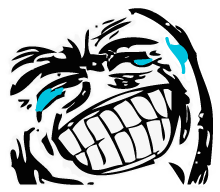
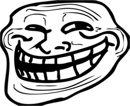
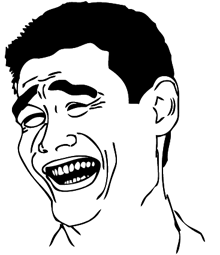
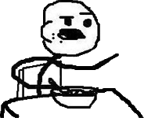
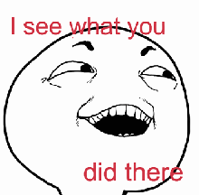
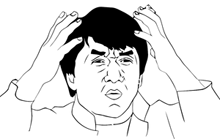

Info
Rage faces were adopted by the reddit community in the site's youth. Many were borrowed from 4chan, many more created by the Reddit community. They are often used as components for "rage comics".
The Happy Grin

Used to express Happiness, or to revel in an event that has recently passed
The Trollface

Used to express the act of trolling. The trollface is a misfigured smiling face, an iconic image that represents trolls and spammers alike.
Yao - "Forget That!"

Used to express a condition that you would rather not be in. Like spiders, hate spiders.
Man Eating Cereal

A relatable first panel, Cereal Guy
I See What You Did There

Generally used to acknowledge something humorous.
Nerd
Drop some knowledge on them!
Jackie Chan

Generally for WTF moments
End of page!
Notice: All rage faces are the property of their original creators.